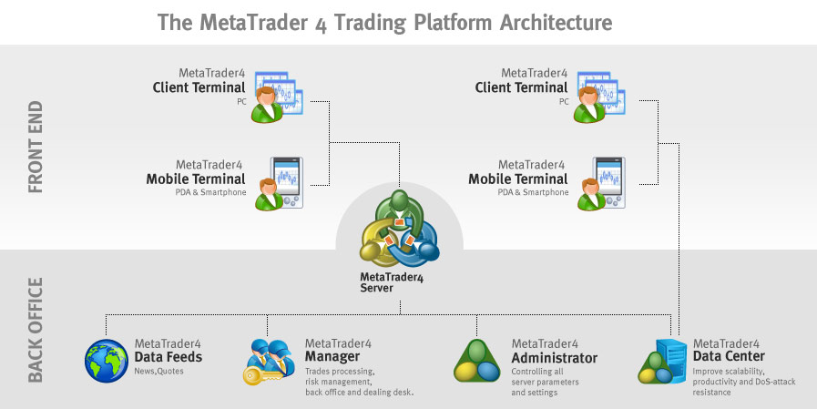
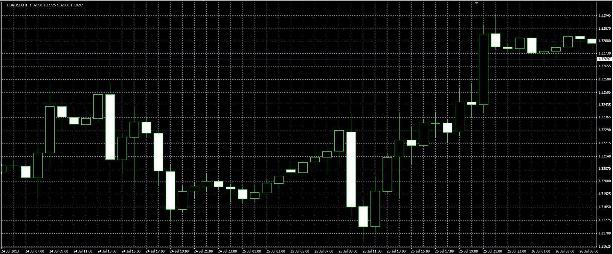

Programowanie automatycznych strategii transakcyjnych
Część trzecia - zaawansowana 4.11.2015
Stworzone przez Tomasz Waszczyk / Twitter @Boomattache
Książka

Pobierz
Agenda
- Metody ustawiania zlecenia stop loss
- Zarzadzanie portfelem - wielkość pozycji
- Zmienne predefiniowane
- Architektura MetaTrader
- Zmiana przedziału czasowego
- Zaktualizowany MQL
- Engulfing pattern w MQL
- Jakie IDE do MQL?
- Gdzie szukać pomocy technicznej
- Wersjonowanie naszych automatów
- . . .
Metody ustawiania SL
int liczbaSwiec = 10;
int LowestShift = iLowest(NULL,0,MODE_LOW,liczbaSwiec,0);
double BuyStopLoss = Low[LowestShift];
Alternatywny sposób ustawiania SL - Parabolic SAR

SAR(i) = SAR(i-1)+PRZYSPIESZENIE*(CENA_POPRZEDNIA(i-1)-SAR(i-1))
Volatility stop loss
Zarzadząnie wielkoscia pozycji
// External variables
extern bool DynamicLotSize = true;
extern double EquityPercent = 2;
extern double FixedLotSize = 0.1;
// Start function
if(DynamicLotSize == true)
{
double RiskAmount = AccountEquity() * (EquityPercent / 100);
double TickValue = MarketInfo(Symbol(),MODE_TICKVALUE);
if(Digits == 3 || Digits == 5) TickValue *= 10;
double CalcLots = (RiskAmount / StopLoss) / TickValue;
double LotSize = CalcLots;
}
else LotSize = FixedLotSize;
Do jakich informacji mamy dostęp z MQL - zmienne predefiniowane
Architektura MetaTrader
Zmiana przedzialu czasowego - programujemy !
//+------------------------------------------------------------------+
//| zmienTF.mq4 |
//| Tomasz Waszczyk |
//| https://www.waszczyk.com |
//+------------------------------------------------------------------+
#property copyright "Tomasz Waszczyk"
#property link "https://www.waszczyk.com"
#property version "1.00"
#property strict
//+------------------------------------------------------------------+
//| Script program start function |
//+------------------------------------------------------------------+
#property show_inputs
#import "user32.dll"
int PostMessageA(int hWnd,int Msg,int wParam,int lParam);
int GetWindow(int hWnd,int uCmd);
int GetParent(int hWnd);
#import
int eintTF=PERIOD_M5;
//+------------------------------------------------------------------+
//| |
//+------------------------------------------------------------------+
int OnStart()
{
bool blnContinue=true;
int intParent= GetParent(WindowHandle(Symbol(),Period()));
int intChild = GetWindow(intParent,0);
int intCmd;
switch(eintTF)
{
case PERIOD_M1: intCmd = 33137; break;
case PERIOD_M5: intCmd = 33138; break;
case PERIOD_M15: intCmd = 33139; break;
case PERIOD_M30: intCmd = 33140; break;
case PERIOD_H1: intCmd = 35400; break;
case PERIOD_H4: intCmd = 33136; break;
case PERIOD_D1: intCmd = 33134; break;
case PERIOD_W1: intCmd = 33141; break;
case PERIOD_MN1: intCmd = 33334; break;
}
if(intChild>0)
{
if(intChild!=intParent) PostMessageA(intChild,0x0111,intCmd,0);
}
else blnContinue=false;
while(blnContinue)
{
intChild=GetWindow(intChild,2);
if(intChild>0)
{
if(intChild!=intParent) PostMessageA(intChild,0x0111,intCmd,0);
}
else blnContinue=false;
}
// Now do the current window
PostMessageA(intParent,0x0111,intCmd,0);
return 0;
}
//+------------------------------------------------------------------+
Engulfing pattern w MQL
Jakie IDE do programowania ?
Z automatami na kilka rynków spotkałem się przy przeglądaniu konkursu MQL organizowanej przez firmę Metaquotes, tam cześć uczestników używało automatów na kilka rynków, stąd wiem że technicznie
jest to możliwe....
...Ale bardziej mi zależy żeby się dowiedzieć jak najwięcej o zmianach które weszły do nowej...
... wersji MQL4. , Stąd mam prośbę o przekazanie dużej dawki informacji z nowości. Z góry dziękuje i pozdrawiam serdecznie.
Co nowego w języku MQL ?
Profilowanie kodu
Szablony funkcji
template< typename T>
T ArrayMax(T &arr[])
{
uint size=ArraySize(arr);
if(size==0) return(0);
T max=arr[0];
for(uint n=1;n < size ;n++)
if(max < arr[n]) max=arr[n];
//---
return(max);
}
Dlaczego wazne jest odswiezanie ceny?
RefreshRates()
Wielowatkowosc w MQL
while(IsTradeContextBusy()) Sleep(10);
int Ticket = OrderSend(Symbol(),OP_BUY,LotSize,Ask,UseSlippage,0,0,"Buy Order",MagicNumber,0,Green);
Gdzie szukać pomocy technicznej ?
Wersjonowanie naszego kodu zrodlowego
Dziękuję za uwagę
Zapraszam do zadawania pytań.tomasz@waszczyk.com